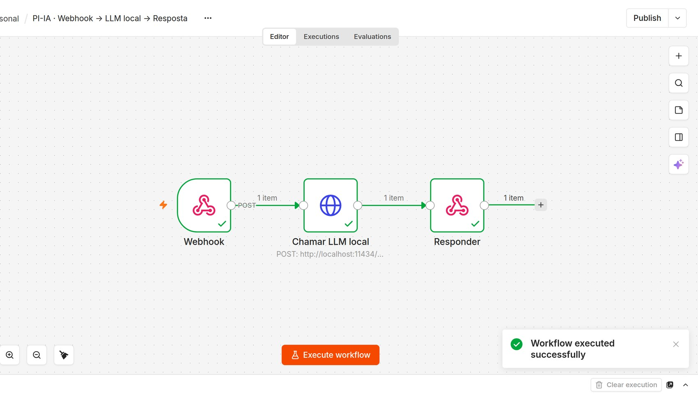
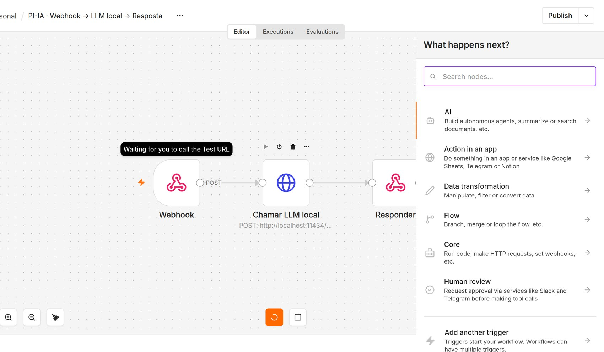
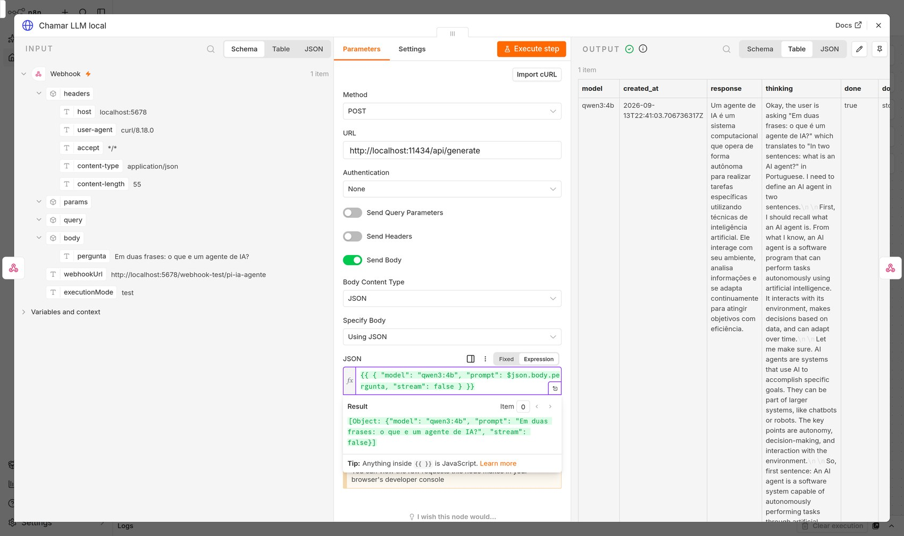
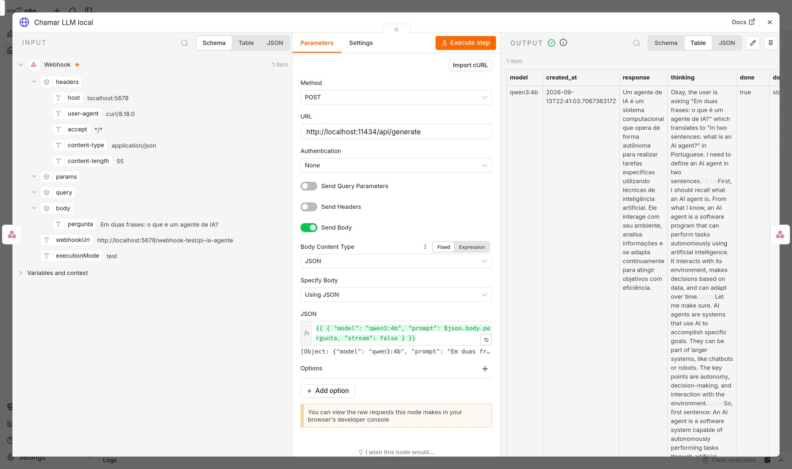
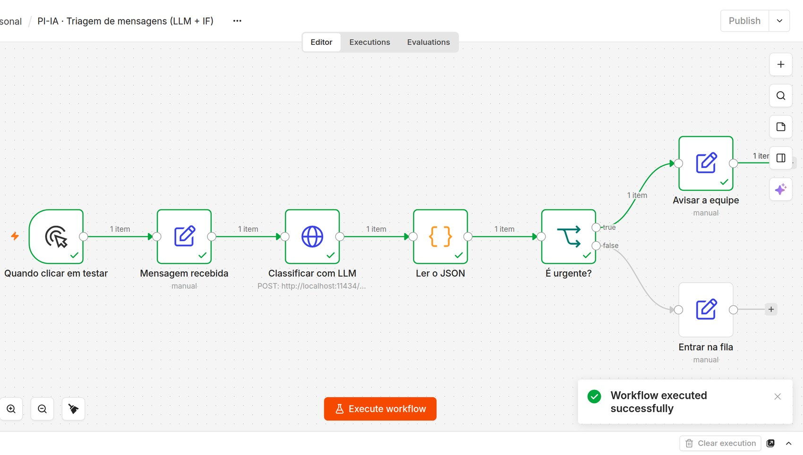
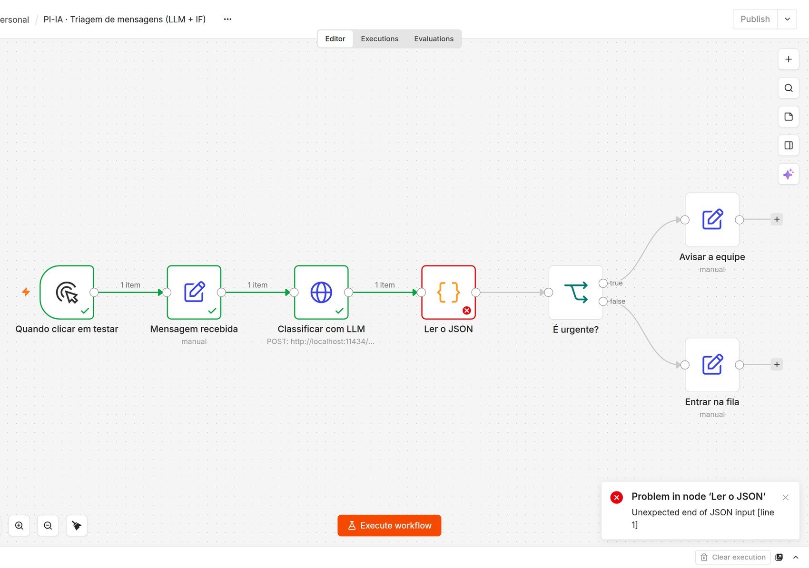
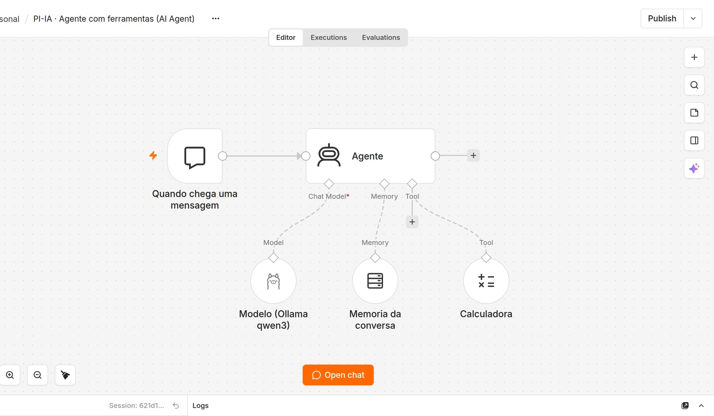
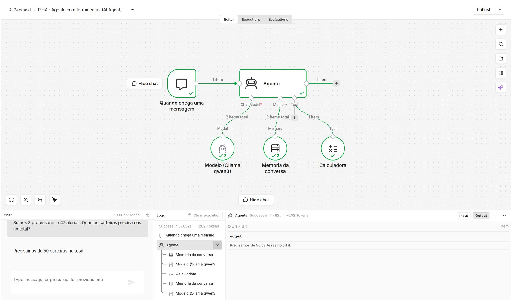
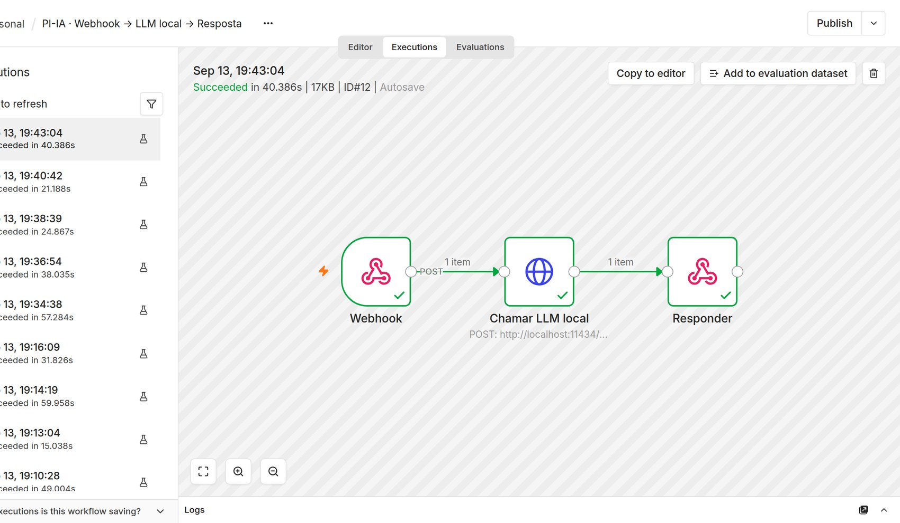

Construindo agentes de IA visualmente com n8n
Projeto Integrado de Introdução à IA · PUC-Rio
Na aula passada você escreveu um agente ReAct em Python: um laço que observa, decide e age, chamando um LLM local por HTTP.
No fim da aula você vai ter três fluxos rodando de verdade na sua máquina: um agente exposto como API, um que classifica mensagens e escolhe caminhos, e um que decide sozinho qual ferramenta usar.
Zero código. Tudo por arrastar-e-soltar, condicionais e integrações prontas. O Zapier é o exemplo clássico.
Interface visual, mas com uma saída de emergência: onde falta flexibilidade, você escreve código. n8n e Make funcionam assim.
Para IA, essa diferença pesa. Quem não programa consegue prototipar um agente inteiro sozinho. E quem programa não fica preso ao que a ferramenta previu, porque sempre dá para descer para um nó de código.
| Ferramenta | Modelo | Ponto forte pra IA |
|---|---|---|
| Zapier / Make | SaaS fechado, pago por execução | Catálogo enorme de integrações prontas |
| n8n | Open-source, self-hosted (de graça na sua máquina) | Nó de código embutido + chamadas de LLM sem limite de execuções pagas |
Para o projeto integrado tem um detalhe decisivo: como o n8n roda na sua máquina, ele alcança o Ollama em localhost:11434. Um serviço na nuvem, por definição, não alcança.
Cada caixa é um nó, cada seta é o caminho que os dados percorrem. Este aqui acabou de rodar: o verde e os "1 item" em cima das setas são reais.

Webhook → HTTP Request (Ollama) → Respond to Webhook, depois de uma execução real. As capturas desta aula usam o modelo qwen3:4b; use o que você baixou.
O que inicia o fluxo: um webhook, um horário, um formulário, uma mensagem de chat.
Nós de HTTP, código, condicionais — incluindo chamar um LLM.
Responder o webhook, mandar um e-mail, escrever numa planilha, avisar alguém.
Todo workflow começa com um trigger. Sem ele o n8n não sabe quando rodar, e o fluxo só executa quando você clica em "Execute workflow" para testar.
| Trigger | Dispara quando… | Serve para |
|---|---|---|
| Manual | Você clica em "Execute workflow" | Desenvolver e depurar |
| Webhook | Chega uma requisição HTTP na URL do fluxo | Expor seu agente como API |
| Chat Trigger | Alguém escreve numa janela de chat que o próprio n8n hospeda | Protótipo de chatbot sem front-end |
| Schedule | De hora em hora, todo dia às 8h… | Relatórios, monitoramento |
| Gmail, Telegram, Sheets… | Chega e-mail, mensagem, ou muda uma linha | Agentes que reagem a eventos reais |
Para demonstrar um agente em cinco minutos, o Chat Trigger é imbatível: ele já entrega uma janela de conversa pronta.
Aperte N no canvas (ou clique no +) e o n8n abre a lista do que dá para conectar em seguida. Repare nas categorias — elas contam bem o que a ferramenta faz.

"Human review" existir como categoria diz muito: aprovação humana antes de uma ação do agente é um caso de uso de primeira classe.
Essa é a parte que confunde todo mundo no começo, então vale parar aqui. Tudo que trafega entre nós é uma lista de itens, e cada item tem uma chave json:
[
{ "json": { "nome": "Ana", "nota": 9.1 } },
{ "json": { "nome": "Bruno", "nota": 6.4 } }
]for que você nunca escreve — e é por isso que às vezes um fluxo manda 40 e-mails quando você esperava um.Dentro de um nó, $json é o item da vez. Então {{ $json.nome }} vale "Ana" na primeira volta e "Bruno" na segunda.
Todo campo tem um botãozinho Fixed / Expression. Em modo Expression, o que estiver entre {{ }} é JavaScript de verdade, e o n8n mostra o resultado embaixo enquanto você digita.

O painel Result resolve a expressão com o dado real do último item que passou por ali.
| Expressão | O que devolve |
|---|---|
{{ $json.body.pergunta }} | Um campo do item que chegou neste nó |
{{ $('Webhook').item.json.body.pergunta }} | Um campo vindo de um nó específico, mesmo lá atrás no fluxo |
{{ $json.texto.toLowerCase().trim() }} | JavaScript puro em cima do dado |
{{ $now.toISO() }} | Data e hora de agora (a biblioteca Luxon vem embutida) |
Quando alguma coisa "some" no meio do fluxo, a resposta quase sempre é trocar $json por $('Nome do nó'). Ou arrastar o campo da aba INPUT direto para dentro do campo — o n8n escreve a expressão por você.
curl de sempreNenhuma mágica acontece aqui. O nó monta exatamente a requisição que você faria na mão:
curl -X POST \
http://localhost:11434/api/generate \
-d '{
"model": "llama3.2",
"prompt": "...",
"stream": false
}'// no campo JSON, em modo Expression
{{ {
"model": "llama3.2",
"prompt": $json.body.pergunta,
"stream": false
} }}A diferença é a interface, não a chamada. Quem já tem o curl pronto pode usar o botão Import cURL e o n8n preenche o nó sozinho.
Um duplo clique no nó abre o painel de três colunas: o que entrou, o que o nó faz, e o que saiu. Depurar no n8n é basicamente ler essas três colunas.

À direita, a resposta real do Ollama. O modelo qwen3 devolve o raciocínio num campo thinking separado do response — detalhe que só aparece quando você olha o dado cru.
Três nós e o agente atende requisições. É o 01-webhook-llm-resposta.json que vem importado na quest.
curl -X POST http://localhost:5678/webhook-test/pi-ia-agente \
-H "Content-Type: application/json" \
-d '{"pergunta": "Em duas frases: o que é um agente de IA?"}'{"resposta": "Um agente de IA é um sistema computacional que
percebe seu ambiente, processa informações e age para
atingir objetivos específicos..."}-test na URL. Ele só vale enquanto o fluxo está em modo de teste; depois de publicar, o endereço vira /webhook/pi-ia-agente. Esse detalhe responde por metade dos 404 da aula.Aqui o fluxo deixa de ser uma linha reta. O LLM classifica a mensagem, e o nó IF manda cada caso para um lado.

A mensagem era sobre um sistema fora do ar véspera de prazo. O modelo classificou como urgente, e só o ramo true executou — o ramo cinza nem foi visitado.
Bifurcar em cima de texto livre é frágil. Prenda a saída num formato e o resto do fluxo fica confiável:
Classifique a mensagem do usuário. Responda APENAS com JSON válido,
sem explicação, no formato:
{"categoria": "urgente" | "normal", "motivo": "uma frase curta"}
Mensagem: {{ $json.mensagem }}A API do Ollama ainda aceita "format": "json", que obriga a saída a ser JSON. Aí um nó Code de uma linha transforma o texto em campos:
return { json: JSON.parse($input.item.json.response) };{{ $json.categoria }} existe de verdade, e o IF compara igual a "urgente" em vez de "contém essa palavra em algum lugar do parágrafo".Esta é a primeira execução desse mesmo fluxo, antes de eu acertar o prompt. O modelo devolveu texto junto com o JSON, o JSON.parse engasgou, e o nó ficou vermelho.

"Unexpected end of JSON input". O nó vermelho diz onde parou; o painel do nó diz exatamente o que chegou lá dentro.
Esse é o ciclo normal de trabalho: rodar, ver quebrar, abrir o nó, olhar o dado cru, ajustar. Bem mais rápido do que espalhar print() pelo código.
Uma vez para todos os itens — você vê a lista inteira:
const notas = $input.all()
.map(i => i.json.nota);
return [{ json: {
media: notas.reduce((a,b) => a+b, 0) / notas.length
} }];Uma vez por item — mais simples de escrever:
const t = $input.item.json.response;
return { json: {
resposta: t.trim(),
palavras: t.split(/\s+/).length
} };Dá para escrever Python também, mas o suporte a JavaScript é mais completo. E, ao contrário do que muito tutorial antigo diz, hoje o nó Code coloca a chave json sozinho se você esquecer.
Até aqui você definiu a ordem das coisas. O nó AI Agent inverte isso: você pendura capacidades embaixo dele, e o modelo decide o que usar, quando e quantas vezes.

As linhas cheias são o fluxo. As pontilhadas embaixo são capacidades: modelo, memória e ferramentas.
É o loop ReAct da Aula 03, com as peças separadas em nós: o Chat Model raciocina, a Memory guarda a conversa, as Tools são o que ele pode fazer no mundo.
Perguntei uma conta ao agente. Ele não respondeu de cabeça: chamou a Calculadora e voltou com o resultado.

No painel Logs, a sequência de dentro do agente: memória → modelo → Calculadora → memória → modelo. No canvas, o "2 items total" no modelo mostra que ele foi chamado duas vezes.
Do mesmo jeito da Aula 03: pela descrição. Ao pendurar um nó como ferramenta, você preenche um campo Description, e é esse texto que entra no prompt do modelo.
Nome: consultar_estoque
Descrição: Consulta quantas unidades de um produto existem em estoque.
Use quando o usuário perguntar se algo está disponível.
URL: http://localhost:8000/estoque
?produto={{ $fromAI('produto') }}Aquele $fromAI('produto') é uma função do n8n: em vez de você fixar o valor, o modelo preenche o parâmetro a partir da conversa. Ele aceita descrição e tipo, como $fromAI('email', 'e-mail do cliente', 'string').
Você não precisa disso hoje, mas vale saber que existe quando o MVP crescer:
| Recurso | Para quando… |
|---|---|
| Vector Store + RAG | O agente precisa responder com base nos seus documentos, não no que o modelo decorou |
| MCP Client / MCP Server | Você quer plugar ferramentas de terceiros no agente, ou expor seu fluxo como ferramenta para outro agente |
| Sub-workflows | O canvas virou espaguete; dá para transformar um pedaço em fluxo separado e chamá-lo |
| Human review | Uma ação é séria demais para o agente fazer sozinho — alguém aprova antes no Slack |
| Evaluations | Você quer medir se uma mudança no prompt melhorou ou piorou, em vez de achar que melhorou |
Congela a saída de um nó. Você testa os nós seguintes sem refazer a chamada ao LLM — e sem esperar 30 segundos a cada tentativa.
Roda só aquele nó, com o input que já está ali.
O histórico de tudo que rodou, com o dado real de cada nó em cada execução.

Cada linha é uma execução guardada, com duração real. Clicando, você vê o fluxo como ele rodou naquele momento.
Chave de API não vai dentro do nó. O n8n guarda em Credentials, criptografadas, e o nó só aponta para elas pelo nome.
Colar sk-abc123… num header do HTTP Request. Quando você exportar o workflow, a chave vai junto no JSON — e daí para o Git é um passo.
Criar uma credencial e selecioná-la no nó. O JSON exportado leva só o id e o nome dela.
key, token, Authorization. Segredo commitado é segredo vazado, mesmo que você apague no commit seguinte.Por padrão, um nó que falha derruba a execução inteira. Três ajustes nas Settings do nó mudam isso:
| Configuração | Efeito |
|---|---|
| Retry On Fail | Tenta de novo algumas vezes, com espera. Resolve boa parte dos timeouts de LLM lento. |
| On Error → Continue | Segue em frente mesmo com erro. Processando uma lista, um item ruim não mata os outros. |
| On Error → Continue (error output) | Cria uma segunda saída, vermelha, só para o caminho de falha. |
Na demo do MVP, "workflow failed" na tela é o pior desfecho possível. Um caminho de erro que responde "não consegui agora, tenta de novo" já muda como a banca enxerga o projeto.
Protótipo em minutos, fluxo que qualquer pessoa do time entende só de olhar, e integração pronta com centenas de serviços.
Menos controle fino que código puro, teste automatizado desajeitado, e um JSON exportado que é bem mais difícil de revisar num Pull Request do que um .py.
A regra honesta é mais ou menos essa: low-code para descobrir o que construir, código para o que já se provou e vai escalar. Muito MVP nunca precisa sair da primeira fase — e tudo bem.
No editor: menu ⋯ → Download. Sai um .json com nós, parâmetros e conexões. É o mesmo formato dos arquivos que vêm na quest.
{
"name": "PI-IA · Webhook → LLM local → Resposta",
"nodes": [
{ "name": "Webhook", "type": "n8n-nodes-base.webhook" },
{ "name": "Chamar LLM local", "type": "n8n-nodes-base.httpRequest" },
{ "name": "Responder", "type": "n8n-nodes-base.respondToWebhook" }
],
"connections": {
"Webhook": { "main": [[{ "node": "Chamar LLM local", "type": "main", "index": 0 }]] }
}
}As conexões são guardadas pelo nome do nó. Renomear um nó reescreve várias linhas do JSON, e é isso que deixa o diff feio. Combinem os nomes cedo no grupo.
puc_ia/n8n/setup.sh (usa Docker, ou npx n8n se não achar Docker)http://localhost:5678. Os três fluxos da aula já vêm importadoscurl. Abra cada nó e leia o INPUT e o OUTPUT⋯ → Download) e enviepuc_ia/n8n/README.md. Enviar comprovação →| Sintoma | O que costuma ser |
|---|---|
| Webhook devolve 404 | Fluxo em teste usa /webhook-test/; /webhook/ só depois de publicar |
ECONNREFUSED 127.0.0.1:11434 com Docker | Dentro do contêiner, localhost é o contêiner. Use http://host.docker.internal:11434 |
| A expressão aparece literal na saída | O campo está em modo Fixed. Troque para Expression |
| "Cannot read property of undefined" | O caminho do dado mudou. Olhe a aba INPUT e clique no campo para copiar o caminho certo |
| O nó seguinte rodou 20 vezes | O anterior devolveu 20 itens. Use Limit ou Aggregate se você queria um só |
Olhe para o agente que você imaginou na aula passada e pergunte: que parte dele poderia ser um workflow no n8n em vez de código Python? Com frequência a resposta é "ele inteiro" — e aí o protótipo fica pronto em uma tarde.
Três perguntas para levar ao workshop da próxima aula:
Feche a aula com o quiz e enviando a comprovação do fluxo no n8n.
Workshop de Ideação do MVP — do agente que você construiu para uma solução com impacto social real.